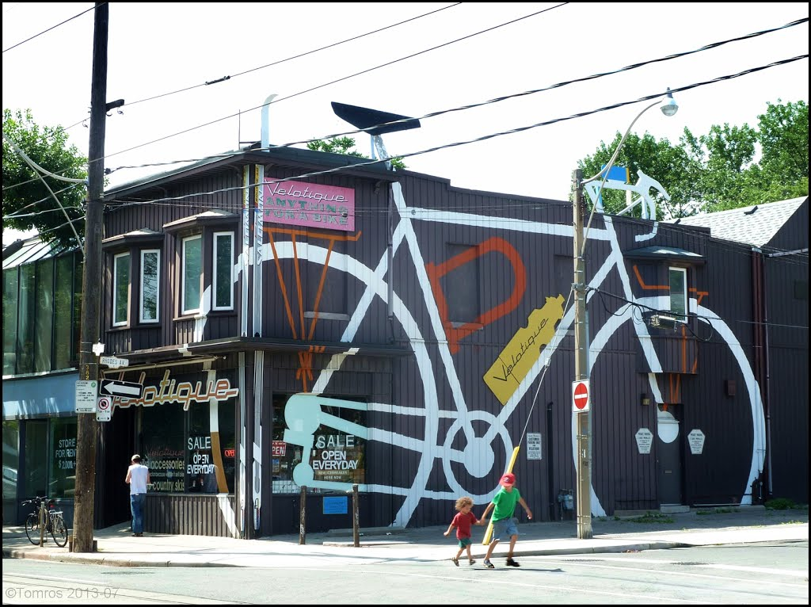
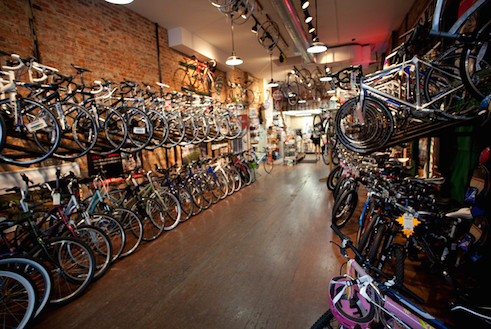

Broken Spokes Bike Shop was founded in New York City in 1978. We have expanded into several storefronts in Soho, but always maintaining our original location on Lafayette Street. In 2010, we also expanded into Park Slope, Brooklyn. Through all these years, our mission stays the same: More people on bikes, more often. We believe all of us on bikes is better for health, for the city, for the environment - and for quality of life.
Charlie McCorkell is founder and current owner of Broken Spokes. He and Hal Ruzal opened the store in 1978. But they didn't always know each other. Charlie McCorkell developed a passion for bicycling in the winter of 1969, when he started his college commute from his parent’s apartment in Windsor Terrace, Brooklyn, to his school, Cooper Union, in the East Village. January is an unusual time to start riding a bike. But an intense dislike for the confines of the subway - and coinciding encouragement from fellow classmate (and future founder of Performance Cycles Product), Francis Bollag - ignited a sense of freedom. Charlie’s inspiration to go by bike in NYC had been ignited. He hardly ever took the train again. After graduating from Cooper Union, Charlie worked as a civil engineer specializing in tunnel construction. He successfully supervised work on the Metro in Washington, D.C., Manhattan’s West Side sewers, the ill-fated NYC water tunnel #3, and the construction of the Lexington Ave 62nd street subway station. By the age of 26, he had acquired his professional engineering license, but also become disenchanted with his career path and began to seek other opportunities.
It was Esta, Charlie's wife, who saw partnership in its two founders. While Charlie was the executive director of TA, the TA inner circle would meet regularly in Charlie's living room in Chelsea. After one such meeting in November of '77, everyone was gone but one of the group's volunteers, a local New Yorker from south Brooklyn, Hal Ruzal. Charlie briefly left the room, and by the time he returned, Esta was introducing him to his new business partner - Hal. Esta had remembered and acted on a conversation she and Charlie had months earlier; they were talking about the future, particularly Charlie’s lack of long-term enthusiasm for civil engineering. He had mentioned that he he'd like to open a bike store and make avocation a vocation. In such conversations are the courses of lives made! Three months later the lease was signed at 244 Lafayette, and under $5,000 in merchandise was purchased and an opening party was planned. The question was: How would Broken Spokes be different from other stores and what could we be best at? The answer: Promote bike advocacy and support our loyal customers. It's about time that a shop make bikes accessible by offering test rides. And the concept of a repair area in a fishbowl was born- what we do as mechanics should not be hidden from view. We will offer repair classes. The people-centered thinking took off.